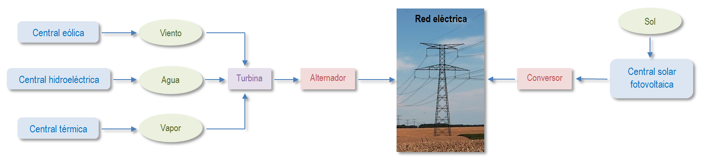

2. Generación de corriente eléctrica
La energía que consumimos
En los paises desarrollados es frecuente que consumamos a diario gasolinas y gasóleos para vehículos, y gas ciudad o natural para calefacción y agua caliente en viviendas. Sin embargo, la forma de consumo energético más frecuente en nuestros hogares es la eléctrica.
¿Qué tiene la energía eléctrica para ser la más consumida en viviendas, edificios de oficina, industriales y comerciales...?
En el siguiente esquema pueden observarse los principales sistemas de generación de energía eléctrica. Los que utilizan el sistema fotovoltaico producen corriente contínua, mientras que el resto, los que se sirven de un sistema turbina-alternador, generan corriente alterna.

Esquema general de producción de energía eléctrica
Fuente: elaboración propia
Corriente de intensidad constante en la que el movimiento de las cargas siempre es en el mismo sentido. Generadores: pilas, baterías y células fotovoltaicas.
Corriente eléctrica variable en la que las cargas eléctricas cambian el sentido del movimiento de manera periódica. Se generan en los alternadores o generadores rotatorios por inducción magnética.
Comprueba lo aprendido
Solución
Solución
Obra publicada con Licencia Creative Commons Reconocimiento Compartir igual 4.0